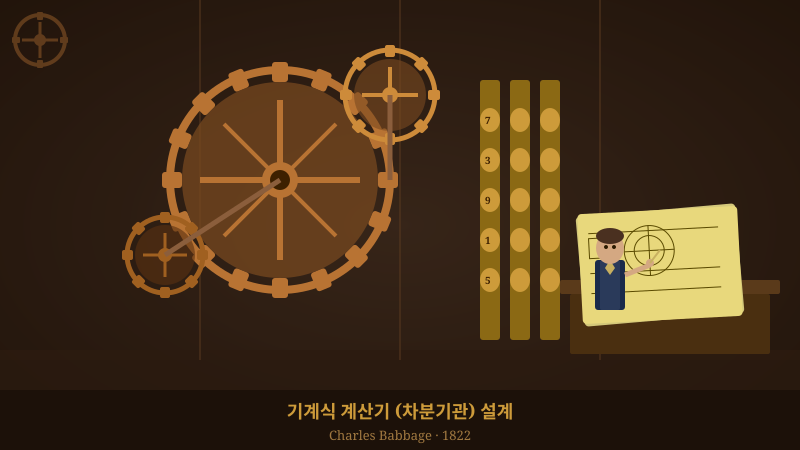

1822
차분기관, “기계가 계산하면 사람이 안 죽어요”
잘못된 항해표 때문에 배가 침몰하던 시절, 영국 수학자 찰스 배비지가 “톱니바퀴와 레버로 정확히 숫자를 다루는 기계”를 설계했어요. 130년 후 등장할 진짜 컴퓨터의 첫 꿈이었습니다.

1820년대 영국, 항해사들은 치명적인 위험에 시달렸어요. 바다에서 자기 위치를 정확히 알려면 별의 위치가 적힌 두꺼운 표(천문 항해표)가 필요했는데, 이 표를 사람이 손으로 계산해서 만들었거든요. 그런데 사람이 계산하다 보면 오타가 나거나 잘못 계산한 숫자가 들어갔습니다. 항해사가 이 잘못된 표를 믿고 가다가 배가 좌초하는 일이 비일비재했어요. 한 항해사 가족은 슬피 말했습니다. "우리 아들이 잘못된 항해표 때문에 배가 침몰해서 죽었어요. 사람의 실수가 사람을 죽여요."
케임브리지의 수학자 찰스 배비지는 한숨 쉬며 표를 보다가 발칙한 발상을 합니다. "사람이 계산하니까 실수가 나는 거잖아. 그럼 기계가 계산하면 어떨까? 톱니바퀴와 레버로 정확하게 숫자를 다루는 기계를 만들면, 절대 실수하지 않을 거야."
1822년 그는 차분기관(Difference Engine) 설계를 발표했어요. 수만 개의 톱니바퀴가 정밀하게 맞물려 다항식 계산을 자동으로 수행하는 거대한 기계였습니다. 영국 정부도 이 발상의 가치를 알아보고 예산을 지원했어요. 한 동료 수학자는 환호했습니다. "이 기계가 만들어지면 항해표 계산을 자동화할 수 있어요. 사람의 실수가 사라지고, 수많은 선원의 목숨을 구할 수 있어요!" 하지만 안타깝게도 당시 기술로는 부품 가공이 너무 어려워서 배비지는 평생 이 기계를 완성하지 못했습니다.
그래도 차분기관의 의미는 어마어마했어요. "기계가 계산을 대신할 수 있다"는 발상의 첫 본격적 시도였거든요. 130년 후에 등장할 진짜 컴퓨터의 직접적인 조상입니다. 1991년 런던 과학박물관이 배비지의 원래 설계도대로 차분기관을 실제로 만들었는데, 완벽하게 작동했어요. 배비지는 시대를 앞서간 천재였고, 그저 기술이 그를 따라가지 못했을 뿐이었습니다. 컴퓨터의 첫 꿈이 1822년 영국에서 태어난 셈이에요.
배비지가 설계한 '차분기관(Difference Engine)'은 복잡한 다항식을 단순한 덧셈의 반복으로 변환하여 계산하는 기계식 계산기였습니다. 금속 기어와 축의 물리적인 움직임을 통해 숫자를 표현하고 연산을 수행하도록 고안되었습니다. 이 설계는 비록 당대에 실물로 완성되지는 못했으나, 연산 과정을 자동화하고 기계에 위임한다는 개념을 정립함으로써 훗날 컴퓨터 아키텍처 발전의 중요한 사상적 토대를 제공했습니다.